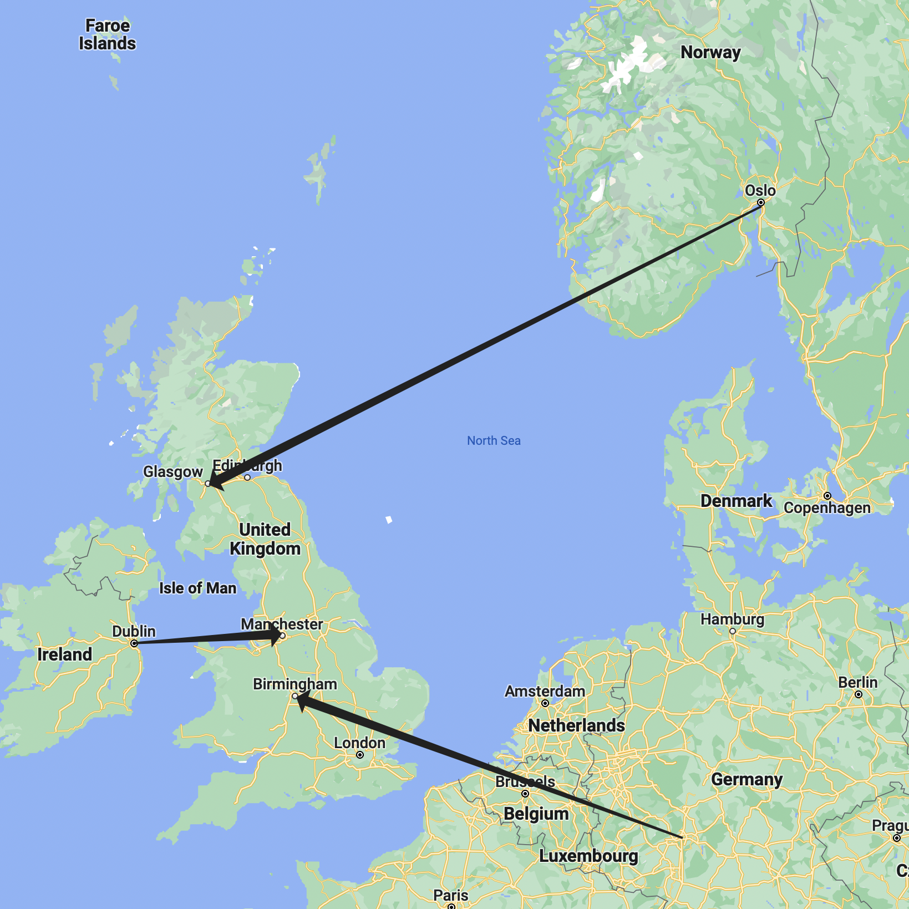

As this feature is restricted to Apple's devices, and iCPR would disconnect if it detects any term of proxy services, abuse would become harder than Cloudflare's WARP. However, there're still weak points of iCPR which need to be fixed, if you have one Apple device and a router running OpenWRT:
iCPR locks you to one country as the system boots, and it select a location closest to you. So by locking to a country and use proxy from another country, you can get to edge areas of the first country, which might be used for fraud.
Also, when iCPR is unable to find a inbound point near user, it would keep rotating the outbound IP. It would also change outbound IP when the external IP address of user changes. This makes iCPR can be used for web scraping by running a WebSocket JavaScript inside Safari to provide proxy.